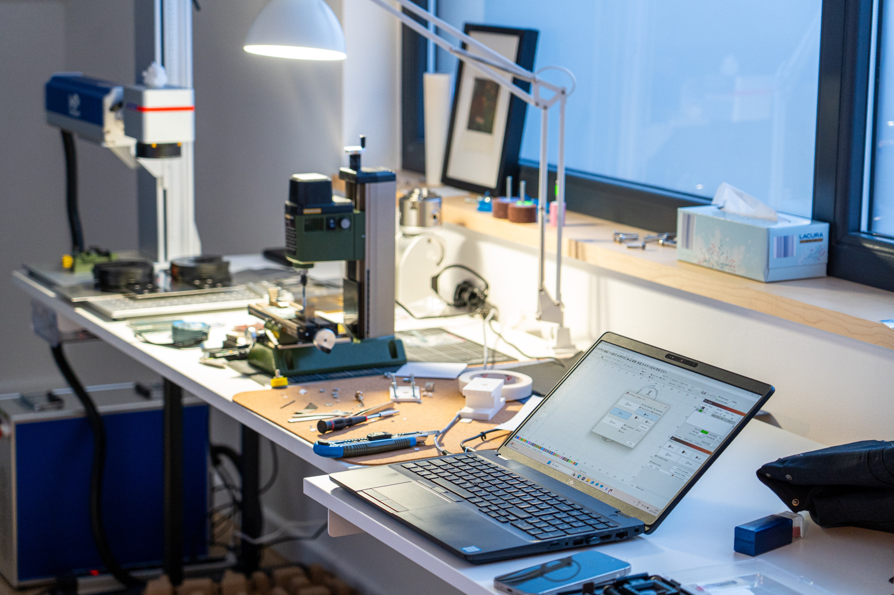
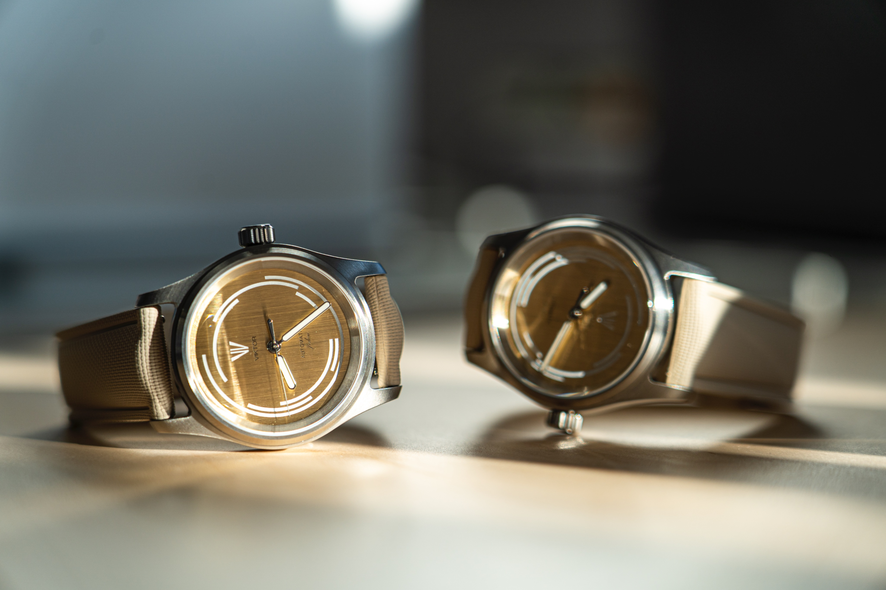

Small workshop. Serious watches.
Viktor Watch
A one-person watch project built through sketches, fixtures, failed parts, and the long physical work that turns an idea into something you can wear.
The workshop
Not a factory. A workshop.
Every Viktor Watch is built, assembled, finished, and handled by me from start to finish. The process is not hidden away. It is part of the product.


01 Series
Model Jedan
The first finished Viktor Watch: a small-batch, hand-finished piece built from years of repetition, testing, and refinement.